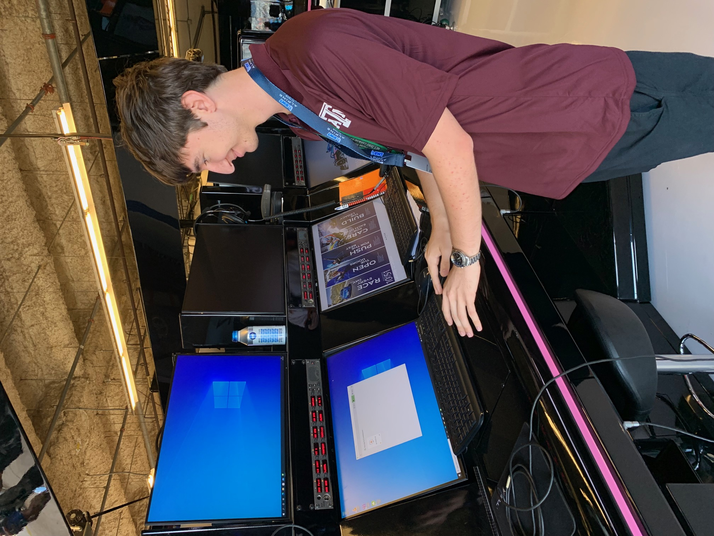
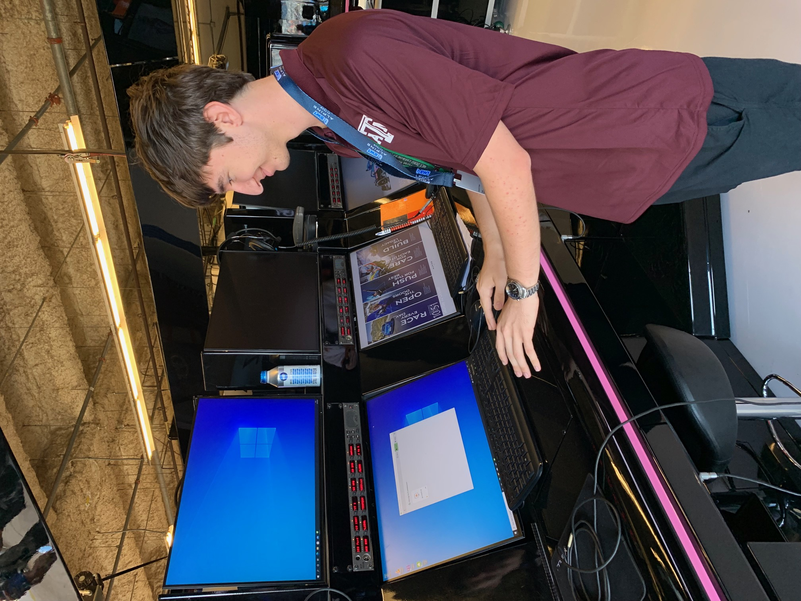

I have always had a passion for race cars, captivated by their speed and engineering excellence. Attending prestigious racing events like Formula 1 and the World Endurance Championship has fueled my enthusiasm even more. The adrenaline rush of watching these incredible machines tear down the track, along with the thrill of being part of the crowd, has deepened my appreciation for the sport and the technology behind these high-performance vehicles.
 



My hyper realistic racing simulator is one of my favorite projects, designed to give the most immersive racing experience possible. It’s equipped with Buttkickers (or haptic transducers) mounted around the seat to simulate the rumble over turns, a direct drive Fanatec wheel, restricting seat belts (belt tensioners) for added realism, VR goggles, and even air which is blown through tubes to mimic wind. I have played multiple racing games, but races in iRacing are the most immersive by far. My go-to events are in the Porsche 963 from WEC, and I love putting up competitive times on the iconic tracks: SPA, IMOLA, and COTA. Additionally, using Sparco gloves and booties add to the authentic feel. The pedals are responsive and differ between cars, adding to the realism of the set up. I have two wheels (yoke and traditional) which can be easily swapped when racing different vehicles. The buttons have been labeled for ease of use, despite being in VR. The simulator is equipped with paddle shifters, a gear shift, and a hydro-ebrake. Furthermore, there is a mounted dash which lights up (not pictured) and displays the according dash in-game. This helps for viewers who want to watch laps and improve their own times through spectating. Other notable cars and tracks I enjoy are: Ferrari 296 gtb, Porsche 911 GT3 Cup (992), Mazda MX-5 Cup, The Nürburgring, Monza, Laguna Seca, among many others.
In addition to full-scale racing, I have a strong interest in remote-controlled (RC) cars. Building and customizing my own RC vehicles allows me to apply my engineering skills in a fun and creative way. Whether it’s racing them on the track or modifying them for improved performance, this hobby combines my love for cars with hands-on experience in mechanics and design.
I started my journey with RC planes by building two foam planes—one green, one purple. The wings were crafted from a foam mold, which I fitted with two servos for wing control, a rotor, and a lithium battery. Later on, I added LED lights along the wingspan for night flying. These foam planes were perfect for training, as they were durable enough to handle crashes, even into fences, at over 30 mph without sustaining damage. They were my introduction to high-speed, controlled flight, and they really helped me build the skills for more advanced flying.
Once I felt confident with the foam planes, I stepped up to RC carbon planes. Ordered overseas from a shop in Europe, these planes were hand-made with custom composite bodies, making them incredibly lightweight, fast, and agile. The craftsmanship in these planes is impressive—they feature a sleek, slim body design and multiple replaceable parts, which is great for both maintenance and upgrades. The ability to swap out components quickly made them perfect for fine-tuning flight performance.
These planes were designed to maneuver like no other, cutting through the air with sharp turns and responsive controls that demanded a higher level of skill. The precise handling made every flight both challenging and rewarding. Flying these required a deep understanding of aerodynamics and a much more delicate touch on the controls. But that’s what made them exhilarating—it was a whole new level of RC flight that pushed my skills further, offering a thrill that just wasn’t possible with the foam planes.

This is my Futaba T12FGA, a 12-channel transmitter that I use for controlling my RC planes. It’s perfect for the precision flying I do with my carbon planes because it gives me total control over every aspect of the flight, from throttle to pitch, yaw, and roll. The dual control sticks and all the adjustable switches let me fine-tune my inputs exactly how I need them. The large LCD screen is great for tracking real-time data and making quick adjustments on the go.

The RC car I have was originally a Christmas gift, but the stock components left a lot to be desired. It was slow, felt clunky, and lacked the kind of excitement I was after. The plastic drive train and gears were flimsy, which made the car sluggish and prone to breaking under pressure. It just didn’t have the durability or speed I was looking for.
I knew I could get more out of it, so I started upgrading. I swapped out the plastic parts for metal components, mostly aluminum, which drastically improved the car’s strength and handling. I replaced the plastic frame with custom aluminum sheets that I spray-painted green for a personalized touch. These changes made the car more durable, responsive, and faster—but I didn’t stop there.
I began experimenting with the suspension configuration to push every bit of performance I could out of it. Adjusting the suspension helped me fine-tune how the car handled different terrains and corners, allowing for smoother, more controlled rides. I also tackled the issue of tire ballooning, which was limiting my speed. I tried different techniques, like wrapping zip ties around the tires to prevent them from expanding at high speeds. These modifications turned the car into a high-performance machine, capable of handling more power and speed than ever before.
I’ve also been dedicated to honing my skills through machining classes. These courses have equipped me with practical knowledge of various machining techniques, from CNC operation to manual lathe work. Working with different materials and tools has not only enhanced my technical abilities but has also deepened my understanding of manufacturing processes. This experience complements my automotive interests, allowing me to appreciate the craftsmanship that goes into building and modifying vehicles.